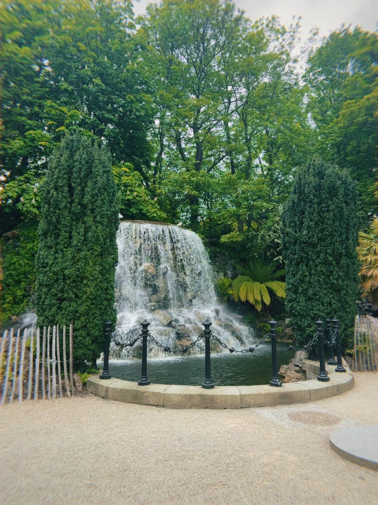
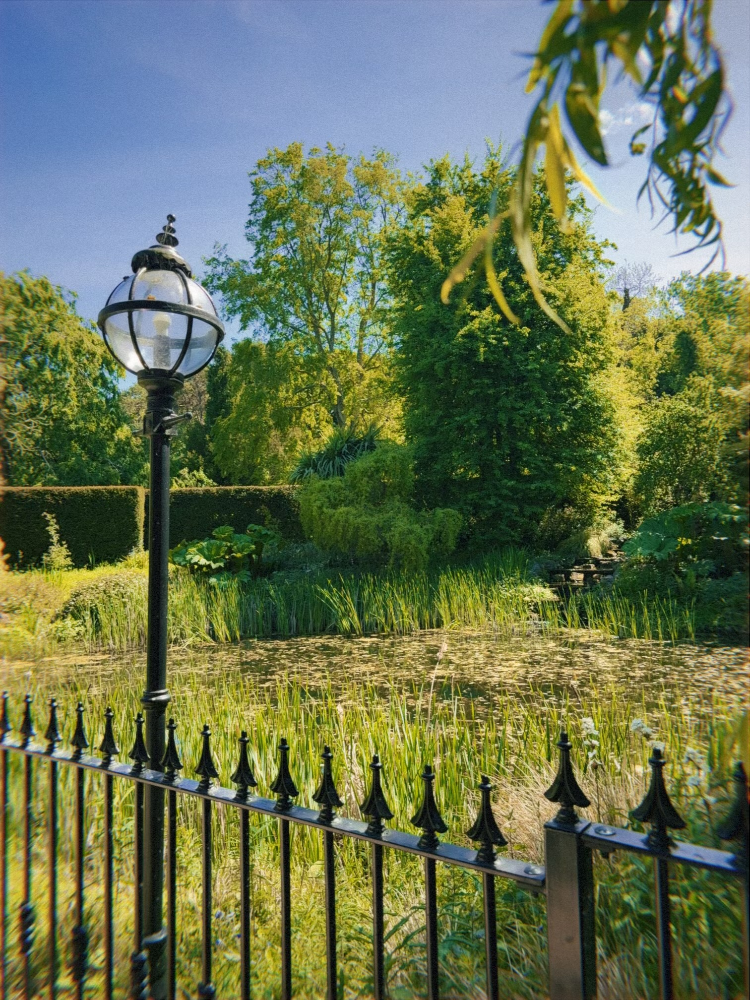
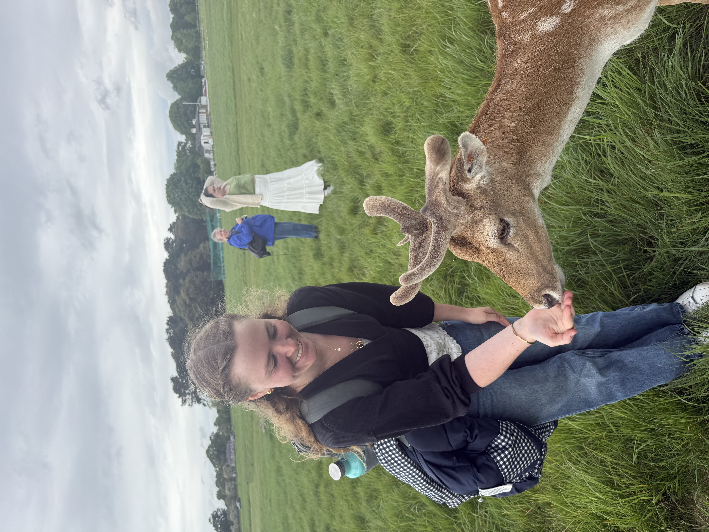
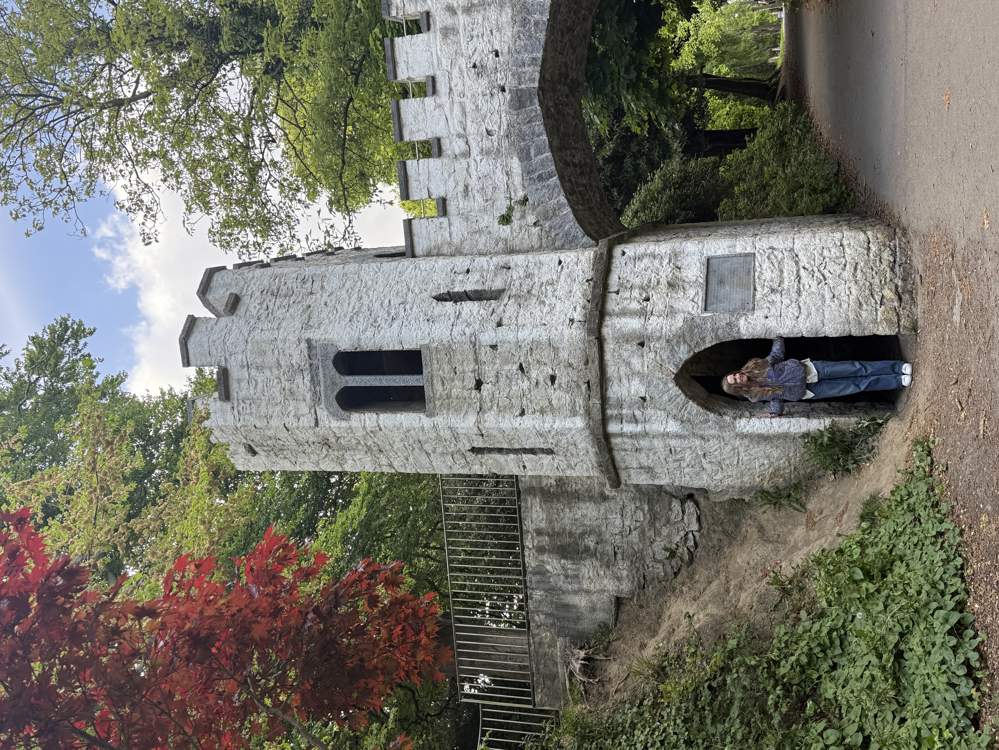
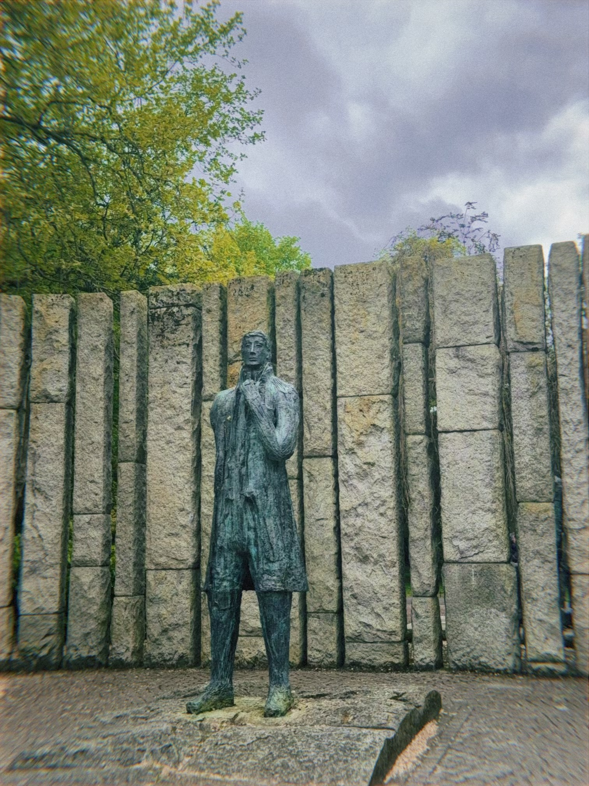

Iveagh Gardens
I went here with Camilla one day to kill extra time during our lunch break, and it was fun to find all of the little things this little secret garden had to offer. It feels much more secluded than St Stephens Green, yet vast and filled with treasures. We found a waterfall giving off lovely noise and masking the sounds of the city, and wandered past sculptures and the archery green. Between the rose garden and the hedge maze with its sundial, there was so much to explore. It was the perfect spot to just watch people and sit for a bit.
Malahide Castle Gardens
The malahide castle gardens contained a number of greenhouses, a fairy garden with wooden sculptures, a small pond, a butterfly house, and some celtic patterns taken from stained glass in the windows of the palace. I loved to see all the butterflies flit about the fruit laid out for them and to see the free roaming caterpillars in the enclosure, very different from other butterfly houses I have been to. The fairy garden had dragon eggs, fairy circles, doors and other fun things littered around the vast garden by the side of the castle. It was so much fun to explore these gardens and the Fingal farmers market in Malahide with my roommate Mia, and just talk and enjoy the sunshine.


Phoenix Park
I went here with my roommates to feed the wild deer, and it was so, so cool! Anna pulled out the bag of carrots and they started swarming at her so she had to fling all of them on the ground. We were a bit more careful with the cashews, hiding them from the deer's view and slowly pulling out handfuls to feed them. Most of them had spots and little fuzzy antlers and while they were pretty chill with people it didn’t really seem like they wanted to be pet. We got a ton of cute photos here and got to enjoy the stunning park and great weather at the same time!
St. Anne's Park
I went to this park after visiting the Irish wheelchair association, maybe 25 minutes from Dublin. It was vast and beautiful, so big it may constitute as more of a hike than a garden. The western side of the park had a rose garden, mostly dormant due to it being early spring. However in the center of the garden, as the wind rushed by and the trees rustled in the distance there were butter yellow roses that smelled amazing and were illuminated in dappled light from the leaves above. The Annie Tower Bridge was a super fun photo op to explore on the eastern side of the park. With its window, climbing flowers and greenery around it felt like something out of a fairytale.


St. Stephen's Green
I walk past and through here every class day, and it really feels like the Central Park of Dublin. The nature and mix of paths is super organic, twisting around the central lake where the ducks can be found waddling by. I love that you can see the bullet holes in the Fusiliers' Arch. It's a constant reminder of the 1916 Rising that happened right where people now sit and eat their sandwiches. There's something so grounding about the mix of history and the everyday bustle; whether I'm admiring the Theobald Wolfe Tone statue or just people-watching by the bandstand, it feels like the true heart of the city.